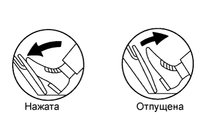

DTC P2121 Неисправность в цепи датчика положения педали/дроссельной заслонки "D", обусловленная выходом характеристики за пределы допустимого диапазона / неправильным значением параметра |
| № DTC | Условие обнаружения DTC | Неисправный участок |
| P2121 | Разница между значениями напряжения на контактах VРA и VРA2 составляет менее 0,4 В или более 1,2 В в течение 0,5 с (логика диагностирования за 1 поездку). |
|
| 1.ПРОВЕРЬТЕ, НЕ ВЫВОДЯТСЯ ЛИ ДРУГИЕ КОДЫ DTC (ПОМИМО DTC P2121) |
Подсоедините портативный диагностический прибор к DLC3.
Установите замок зажигания в положение ON (ВКЛ).
Включите портативный диагностический прибор.
Войдите в следующие меню: Powertrain / Engine and ECT / DTC.
Считайте коды DTC.
| Результат | Перейти к |
| DTC P2121 выводится | А |
| DTC P2121 и другие DTC выводятся | B |
|
| ||||
| А | |
| 2.СНИМИТЕ ПОКАЗАНИЯ ПОРТАТИВНОГО ДИАГНОСТИЧЕСКОГО ПРИБОРА (ACCEL SENSOR OUT NO.1 И ACCEL SENSOR OUT NO.2) |
|  |
Подсоедините портативный диагностический прибор к DLC3.
Установите замок зажигания в положение ON (ВКЛ).
Включите портативный диагностический прибор.
Войдите в следующие меню: Powertrain / Engine and ECT / Data List / Accel Sensor Out No.1 и Accel Sensor Out No.2.
Считайте значения, отображенные на диагностическом приборе.
| Положения педали акселератора | Accel Sensor Out No.1 | Accel Sensor Out No.2 |
| Отпущена | 0,5 - 1,1 В | 1,2 - 2,0 В |
| Нажата | 2,6 - 4,5 В | 3,4 - 5,0 В |
|
| ||||
| OK | ||
| ||
| 3.ЗАМЕНИТЕ ДАТЧИК ПОЛОЖЕНИЯ ПЕДАЛИ АКСЕЛЕРАТОРА В СБОРЕ |
Замените датчик положения педали акселератора в сборе (Нажмите здесь).
| ДАЛЕЕ | |
| 4.ПРОВЕРЬТЕ, ВОЗОБНОВЛЯЕТСЯ ЛИ ВЫВОД DTC (DTC P2121) |
Подсоедините портативный диагностический прибор к DLC3.
Установите замок зажигания в положение ON (ВКЛ).
Включите портативный диагностический прибор.
Сбросьте коды DTC (Нажмите здесь).
Запустите двигатель.
Дайте двигателю поработать на холостом ходу в течение 15 секунд.
Войдите в следующие меню: Powertrain / Engine and ECT / DTC.
Считайте коды DTC.
| Результат | Следующий шаг |
| DTC P2121 выводится | А |
| DTC не выводится | B |
|
| ||||
| А | ||
| ||